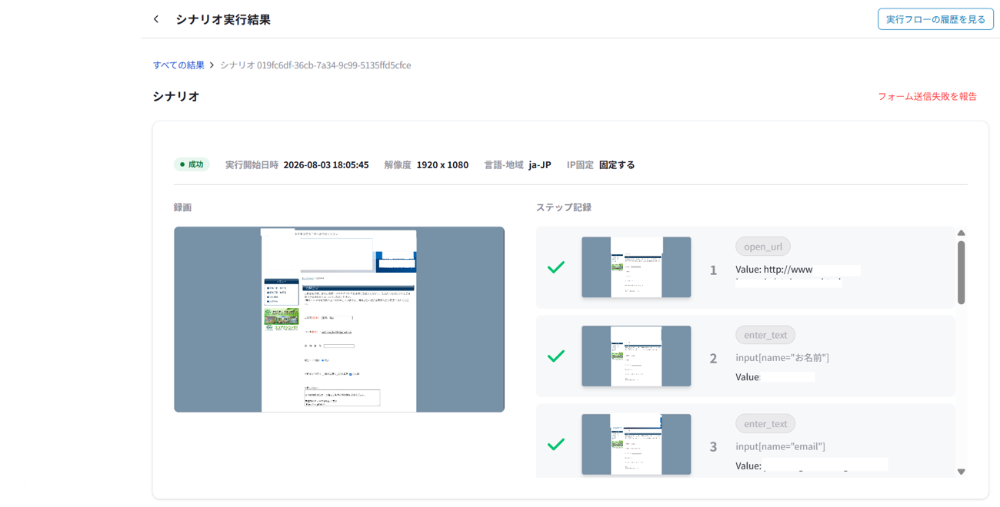

AIフォーム営業｜つばめシリーズ
1通5円。
送った全件を、
動画で残します。
つばめリード ご相談用資料
株式会社ライトアップ
市場の変化
フォーム営業は、
送る会社が増え、
反応は下がっています。
- 送る側
AIで文面づくりと送信が手軽になり、フォームから営業を送る会社が増えました。
- 受け取る側
届く営業の連絡が増え、1通ずつ読まれる機会は減る傾向にあります。
現場で起きていること
月末の報告が、
送信数の1行だけ。
どの会社に、どんな文面が、最後まで届いたのか。件数だけの報告からは、それが分かりません。
- どの会社のフォームに入ったのか
- 送信ボタンまで押せたのか
- 指定した文面のまま届いたのか
従来のやり方の限界
反応が少ない理由を、
切り分けられません。
文面が合っていない？
訴求がずれているのか
送り先が合っていない？
業種や規模がずれているのか
そもそも送れていない？
途中で止まっているのか
原因が分からないまま、翌月の費用を払うことになります。
解決の型
1社ずつ読んで、書いて、
送って、録ります。
- READ読む相手のサイトをAIが読む
- WRITE書くその会社あての一文を足す
- SEND送るフォームを解析して入力・送信
- RECORD録る入力から送信完了まで録画
- 絞り込み業種・地域・規模で選ぶ
- 100社1回の選択で追加できる数
- クラウドPCを閉じても動く
- 30,000通月の送信上限
実際の管理画面
送った1通ごとに、
録画と記録が残ります。

- 01
1通ごとに録画
開くところから送信完了まで
- 02
手順ごとの成否
止まった手順が分かる
- 03
60日間保存
あとから1社ずつ開ける
- 04
失敗を報告
画面のボタンから知らせる
送り方の決まりごと
送ってよい先にだけ、
名乗って送ります。
断られた先を外す
営業お断りのフォームや、停止のご依頼があった送り先は対象外です。
送り主を名乗る
会社名、担当者、連絡先、連絡の目的を文面に書きます。
CAPTCHAは突破しない
送れないものは失敗として扱い、課金もしません。
料金
1通5円。
単価は他社と横並びです。
成功した送信1通あたり
- 送信に失敗した分0円
- 月の送信上限30,000通
- 録画の保存60日
消費税の扱いと最低利用数は、見積の前に書面でご案内します。
公開価格と、送った記録
各社の公開情報（2026年9月2日時点）。社名は伏せています。
| サービス | 公開単価 | 送った記録 |
|---|---|---|
| つばめリード | 成功1通5円 | 全件の録画＋手順記録 |
| A社 | 5〜15円／件 | 成功・失敗のリスト |
| B社 | 4.9〜11.2円／件 | 送信前後のスクショ |
| C社 | 月1万件5.5万円の掲載例 | 基本レポート |
単価はほぼ横並びです。違いは、送った事実の残し方にあります。
約束できること・できないこと
5円で約束できるのは、
送信までです。
約束できること
- 成功した送信にだけ課金
- 全件の録画を60日保存
- 断られた先には送らない
約束できないこと
- 返信の数
- 商談の数
- 受注
仮置きの試算（5,000通の場合）
- 送信費
- 25,000円
- 反応の目安
- 5〜10件
他社公開の反応率0.1〜0.2%を仮に置いた単純計算で、自社の実績値ではありません。反応は返信などの数で、商談・受注の数とは別です。税・最低利用数は含みません。
向き・不向き
向き・不向きが、
はっきりあります。
向いている会社
- 全国の法人へ提案できるBtoB商材
- 1件の商談・受注の価値が高い
- すでに売れている、人気のある商材
- 人手が足りず、声をかける母数を増やしたい
- 返信が来たら、すぐ商談に対応できる
向いていない会社
- 商圏が狭い、地域限定の商材
- 単価が低く、受注1件で残る利益が小さい
- 少ない通数で、短期間に良し悪しを決めたい
- 相手に渡せる価値が、まだ言葉になっていない
- BtoCの商材
- 知らない会社からは発注しない業界
導入事例
公開できる事例は、
まだありません。
導入事例やお客様の声として、お見せできるものはまだありません。作った事例を並べることも、しない方針です。
そのかわりにお見せできるもの
- 送った事実
1通ごとの録画と手順の記録
- 始めたあと
録画と反応を見比べて、文面と送り先を見直す材料
次の一歩
見積の前に、
4つの条件を確かめます。
最低利用数と期間
何通から、どのくらいの期間か
消費税と支払時期
税込か税別か、いつ支払うか
送れないフォーム
対象外になるフォームの種類
成功の判定と録画の見方
何を成功送信とし、どう確かめるか
まず1つの商材で、送れる会社がどれくらいあるかを一緒に数えるところから始めます。
お話しした結果、いまは送らないほうがいい、という結論になるかもしれません。
相談日時を予約する timerex.net/s/wu/56608220